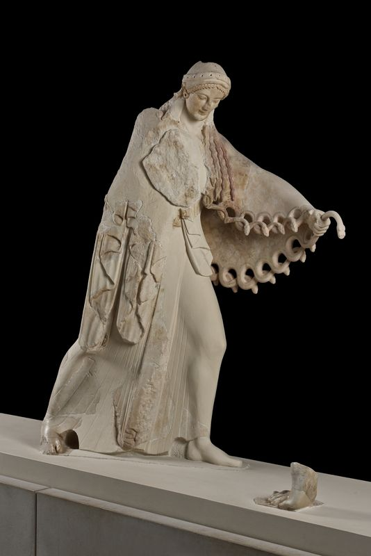
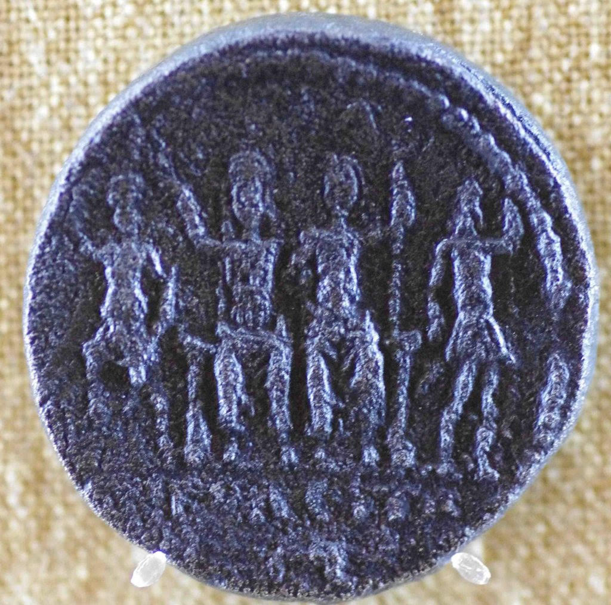
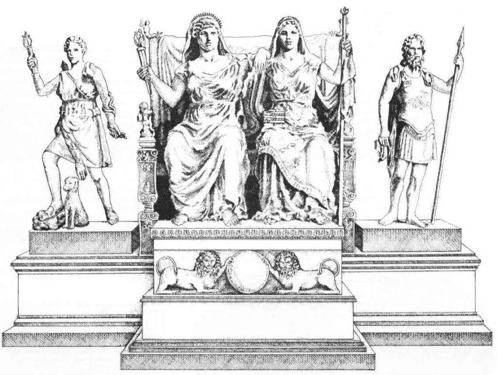
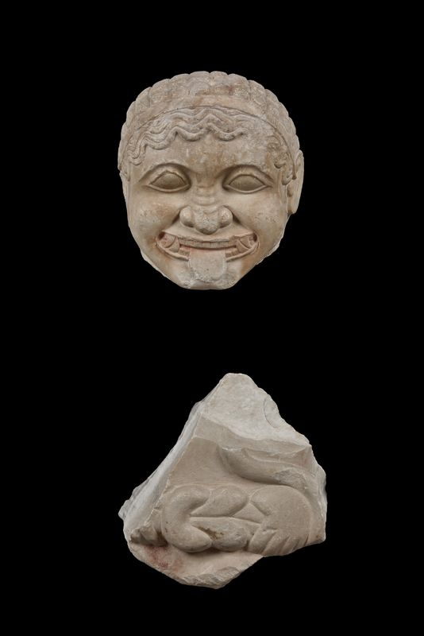
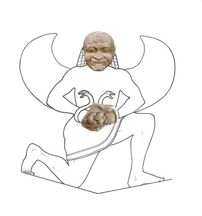
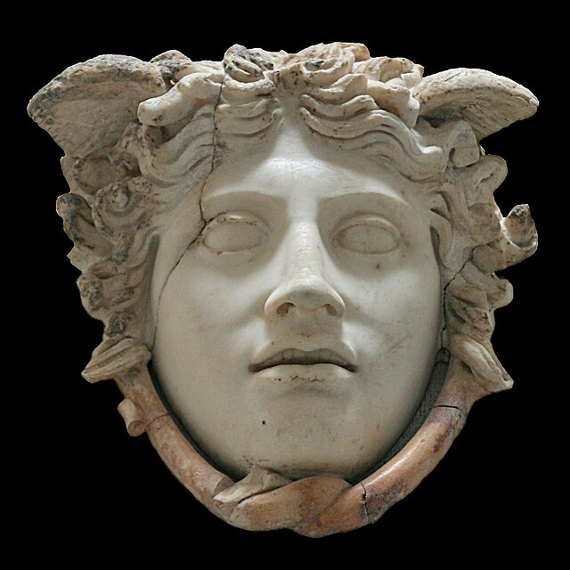

Feminissssssm
Using Snakes as a Symbol for Female Power in Ancient Greek Art
This essay was written for my Ancient Greek Sculpture course.
Introduction
The Ancient Greeks practiced a polytheistic religion centered on a pantheon of gods and goddesses. The Olympians, a group of twelve major deities, included five goddesses. While the most prominent deities—Zeus, Poseidon, and Hades—were male, female figures played significant roles within the mythology. Many of these goddesses, such as Hera and Demeter, were associated with domesticity, fertility, and the hearth. However, notable exceptions challenged these conventions, such as Athena, the goddess of strategic warfare and the patron deity of Athens, one of Greece’s most powerful city-states. These divine figures often diverged from the societal expectations placed on mortal women.
This essay argues that in Ancient Greek art, depictions of snakes alongside female figures symbolize a defiance of societal gender expectations, emphasizing resistance to patriarchal dominance. By analyzing sculptures of Athena, Artemis, and Medusa, I will demonstrate how sculptors used serpentine imagery to indicate a woman’s power, autonomy, and efforts to challenge traditional female roles.
Context
Snakes were a repeated motif in Ancient Greek art; however, scholars debate the intention behind the symbol. Most ancient civilizations incorporated snakes into their religious and political imagery, likely due to the serpent’s unique features. With no limbs, slitted eyes, a long forked tongue, and scales– they are often regarded as semi-mythical. For example, the Egyptians viewed snakes as a symbol of royalty and divinity, placing them on the crown of the Pharaoh– the intermediary between gods and mortals.
The most common interpretation of the Ancient Greek depiction of snakes is as liminal beings, symbolizing the boundary between life and death or humanity and the divine. These interpretations partially stem from the myth of Asklepios, the god of healing who could reverse death– a skill he learned after observing a snake. In his sanctuaries, priests kept serpents as sacred animals to aid in healing, for they believed their ability to shed their skin implied the power of regeneration– the intersection of mortality and immortality.
Additionally, many scholars connect them to chthonic symbolism. Because they slither upon the ground, they act as a bridge to the underworld and can guide souls to Hades. Similarly, their constant contact with the earth made them a fitting symbol for autochthony– the idea that the Athenians sprung from the soil of Greece and were the area’s original inhabitants. This essay, however, will focus on the interaction between snakes and women specifically.
In Ancient Greece, women lived under a strictly patriarchal system with almost no rights or autonomy. Many city-states prohibited them from owning property, leaving them entirely dependent on their fathers and, later, their husbands. Confined primarily to domestic roles, women were expected to bear and raise children while remaining submissive to male authority. Consequently, artistic depictions of women challenging this societal norm are especially striking.
Athena
The Giantomony Pediment is an architectural sculpture from the West Pediment of the Archaios Naos, a temple to Athena on the Athenian Acropolis (see Figure 1). Researchers believe Antenor of Endois sculpted the pediment from Parian marble between 500 and 525 BC, and it depicts Athena in the traditional Archaic style with large almond eyes, a closed-lip smile, and a more stylized body. Archaeologists excavated parts of the sculpture in 1863, 1882, and 1888, and conservationists reconstructed it for display in the Acropolis Museum.
It depicts the myth of the Gigantomachy: the conflict between the twelve Olympians and the giants, huge beings created when Gais castrated Uranus. Both groups wanted absolute power over the universe, leading to a bloody battle that the Olympians won. Athena played an important role in this war, both strategizing and entering combat herself. An oracle informed the Olympians that they needed the help of a mortal to defeat the Giants, so they enlisted the help of the legendary hero Heracles. The giants, however, were immortal in their native land, so Athena suggested Heracles drag him elsewhere before dealing the final blow.
Additionally, during the skirmish, Athena played a critical role in felling one of the strongest giants, Enceladus. Encleladus proclaims he will take Athena as his bride when he defeats the Olympians, despite Athena’s vow of chastity. In response, she faces him on the battlefield. In one form of the myth, she hurls the island of Sicily at him. Athena traps him below, creating a volcano, with the Greek poet Callimachus stating, “the mount of Aitna (Etna) smolders with fire and all its secret depths are shaken as the Gigantos (Giant) under the earth.”
The Archaios Naos Pediment depicts a scene from the middle of the conflict. Athena stands in an active stance, brandishing her spear (now lost) and clutching her aegis. An aegis is a military goatskin garment unique to Zeus and Athena used defensively in battle. It is described in Virgil’s Iliad as “the aegis Athena wears in her angry moods—a fearsome thing with a surface of gold like scaly snake-skin, and the linked serpents and the Gorgon herself upon the goddess’s breast.” Even in literature, the Greeks emphasize the incorporation of snakes in her armor which is apparent in the pediment sculpture as she wields one of the serpent’s heads. At her feet are the fragments of Enceladus’ sculpture, cowering and defeated.
This pediment sculpture is important for a multitude of reasons. Most Ancient Greek polises forbade women from fighting in the military, especially in Athens, but their deity of war was a woman seen bringing a powerful male giant to his knees. To protect herself from an unwanted marriage and consummation, violating her vow of chastity, she employs her strategic genius and brute strength to crush Enceladus. Central to this scene is the snake aegis which emphasizes her fearsome power, symbolizes her ability to mentally and physically dominate a man, and highlights her defiance against Ancient Greek society’s domestic expectations for a woman.
Artemis
Athena is not the only female Olympian depicted with a snake. The cult sculptural group in the Temple of the Great Goddesses at Lykosoura consists of four sculptures: the titan Antyos, Demeter, her daughter Despoina, and Artemis. Lykosoura is an Ancient Greek city in Arcadia, a region in the eastern Peloponnese that the Greek Archaeological Service excavated in 1889. Damophon of Messene carved the statue complex in 180 BC from Doliana marble, and it was colossal, reaching a height of 5.6 meters. However, only fragments remain today, so scholars infer the sculptural groups’ complete form from coins that depict it and Pausanias’ writings (see Figures 2 and 3).
When describing the complex, Pausanias, a Greek traveler and geographer, writes, “By the side of Demeter stands Artemis wrapped in the skin of a deer, and carrying a quiver on her shoulders, while in one hand she holds a torch, in the other two serpents.” Artemis is one of the twelve Olympians and the goddess of the hunt, wild animals, and chastity, and according to the Arcadians, the daughter of Demeter.
Drawing a parallel with Athena, Artemis is a female goddess who does not conform to Greek societal standards for women. Instead of bearing children, she refuses to marry or have sexual intercourse– the primary value of women in a Greek polis. She is a huntress and skilled with a bow despite that activity being restricted almost exclusively to men. Additionally, multiple instances in myth display her defiant attitude towards men.
For example, when the Boeotian hunter Actaeon discovered Artemis and her nymph attendants nude in a spring, he stayed to watch them bathe. When the goddess discovered his violation, she swiftly enacted a brutal punishment to warn future transgressors of the consequences of threatening her vow of chastity. She turned the hero into a stag and stirred his hounds into a frenzy. Unable to recognize their master, Actaeon’s fifty hunting dogs tore him apart.
Other men who expected her to submit sexually or threaten Olympus faced similar displays of immense and ruthless power. The Aloadai were two giants, the offspring of Poseidon and Iphimedea, who challenged the Olympians’ dominion. In an attempt to storm the gods’ home, Otus and Ephialtes began stacking mountains they could scale. Though Ares, the god of war, tried to stop them, he failed, and they trapped him in a bronze urn. Their downfall, instead, came from the goddess Artemis. The Otus declared his intentions to rape and wed Artemis when they overtook Zeus, forcing her to submit. When she learned of their plan, the goddess transformed into a deer and leaped between them. In an effort to capture her, they both threw their spears; however, they missed Artemis and instead struck and killed each other. In Tartarus, they were bound to a column by snakes to be tormented forever for their transgressions.
In both myths, Artemis kills the men who lusted after her and attempted to subjugate her. Refusing to fill the traditional role of women – a figure expected to fill men’s desires and serve them as a wife – she instead resists and demonstrates her divine power and superiority.
Medusa
Depictions of other female figures in myth also support this argument. The Ancient Greeks continuously incorporated the Gorgon symbol into their sculpture, especially architectural, from the Archaic into the Roman Period. An early example of this motif is the Hecatompedon’s Medusa Statue (see Figure 4 and 5). During the Archaic Period, Attic artisans carved it from Hymettos marble around 570 BC. Archaeologists discovered it in 1888 near the Parthenon, and today, it is displayed in the Acropolis Museum.
This sculpture depicts Medusa, the mortal gorgon sister, with a petrifying gaze that could turn onlookers to stone. She has a wide face, broad nose, wagging tongue, and tusks protruding from a wide grin. This expression in and of itself is an anomaly for the period. In the Archaic Period, women were almost exclusively depicted with korai statues, known for their femininity, composure, and “Archaic smile” (serene, slight, and close-lipped) – features truly antithetical to Medusa’s (see Figure 1). In the Hecatompedon’s depiction, the snakes are tied around her waist as she stands in the knielaufen, or kneeling-running, pose. Interestingly, her power lies in her complete rejection of Greek societal beauty standards; Medusa and the Gorgon sisters became a crucial apotropaic symbol in architecture. As stated by scholar Madeleine Glennon, “She represents a dangerous threat meant to deter other dangerous threats, an image of evil to repel evil.” Her hideousness, emphasized by the incorporation of snakes slithering around her garments, provokes fear in men and mythical creatures alike– an impressive feat for a woman who traditionally had no power politically, socially, or domestically.
As Greek sculptural styles continued to evolve, the depiction of Medusa did too. Instead of being represented with features like a beard, large teeth, and thick brows, her face slowly began to conform to Classical beauty standards, but her hair transformed into the tangle of snakes commonly associated with her today. Scholars believe the Medusa Rondanini is a Roman copy of one of the first Greek “Gorgoneia of the beautiful type” (see Figure 6). Some attribute the original sculpture to Phidias, created as a shield device for Athens, dating it to the fifth century BC, while others date it to the fourth century BC. Her eyes, brows, and nose are those of an elegant maiden, but her curled lip revealing teeth and snakes tied below her chin reveal her terrible curse.
The sculptors’ stylistic choices when carving Medusa connect her to a mythological origin different from the Archaic gorgon. Instead of being born a monster, she was initially a beautiful maiden and priestess of Athena. Because she served Athena, she took a vow of chastity, but her beautiful hair and countenance attracted Poseidon. He entered the Temple of Athena and sexually assaulted her, breaking her promise to be abstinent. Athena, disgusted that Medusa lost her virginity in the chaste goddess’s sacred space, transformed her into a gorgon with snakes for hair and a stare that turned living beings to stone.
Viewed as a monster, many tried to hunt her down, but her gaze protected her; Roman poet Ovid describes it vividly, stating, “On all sides through the fields and along the ways he saw the forms of men and beasts changed into stone by one look at Medusa’s face.” Medusa lost the beauty and religious role that made her valuable in Greek society but gained the ability to protect herself from the men who forced her to submit before her curse. Though one may argue that she died at the hands of the Perseus, essentially subjugating her, the demi-god needed the help of four Olympians and their divine weapons: Hades’ cap of invisibility, Athena’s shield, a sickle designed by Hephasteus, and Hermes’ winged sandals. Additionally, he could only defeat Medusa by beheading her while defenseless and sleeping. Even in death, she was so formidable that Perseus needed a special sack to carry her head and used it to defeat a giant sea serpent and save the princess Andromeda.
Conclusion
In conclusion, when depicted with female figures, snakes in Ancient Greek art symbolize their defiance of societal norms and emphasize their autonomy and resistance to patriarchal structures. Athena wields an aegis lined with snakes in battles, asserting her strategic and physical dominance over male foes, such as Enceladus, refusing subjugation to their advances or claims. Similarly, Artemis’ snake in the Damophon complex is an emblem of her ferocity and unyielding chastity, punishing those who seek to exploit her. Finally, Medusa, with her serpentine hair, turns her curse into a weapon capable of petrifying anyone who threatens her.
By integrating snakes into their artistic depictions, Ancient Greek artisans imbued these women with traits that transcended the limitations imposed on mortal women in their society. These female figures challenged their assigned roles, and their serpentine imagery highlights this intersection of femininity and power.
Reference Figures






Bibliography
“Actaeon.” Encyclopædia Britannica. Accessed December 15, 2024. https://www.britannica.com/topic/Actaeon.
“Artemis.” Encyclopædia Britannica, November 18, 2024. https://www.britannica.com/topic/Artemis-Greek-goddess.
Belson, Janer Danforth. “The Medusa Rondanini: A New Look.” American Journal of Archaeology 84, no. 3 (1980): 373–78. https://doi.org/10.2307/504713.
Chaliakopoulos, Antonis. “Enceladus: The Greek Giant That Shakes the Earth.” The Collector, March 21, 2021. https://www.thecollector.com/enceladus/.
Glennon, Madeleine. “Medusa in Ancient Greek Art.” In Heilbrunn Timeline of Art History. New York: The Metropolitan Museum of Art, 2000–. Last modified March 2017. http://www.metmuseum.org/toah/hd/medu/hd_medu.htm.
Hekatompedon. Medusa statue- 1. Photograph. Acropolis Museum Official Website. Athens, n.d. Athens. https://www.theacropolismuseum.gr/en/hekatompedon-medusa-statue.
Hekatompedon. Medusa statue- 3. Photograph. Acropolis Museum Official Website. Athens, n.d. Athens. https://www.theacropolismuseum.gr/en/hekatompedon-medusa-statue.
“Hekatompedon. Medusa Statue.” Acropolis Museum | Official website. Accessed December 16, 2024. https://www.theacropolismuseum.gr/en/hekatompedon-medusa-statue.
Kabel, Matthias. Rondanini Medusa. Photograph. Munich, October 26, 2005. Munich.
Karoglou, Kyriaki. Dangerous beauty: Medusa in classical art. New York: The Metropolitan Museum of Art, 2018.
Netchev, Simeon. “The Twelve Olympian Gods of Ancient Greece.” World History Encyclopedia. Last modified October 01, 2024. https://www.worldhistory.org/image/19516/the-twelve-olympian-gods-of-ancient-greece/.
Old Athena Temple. The Gigantomachy pediment. Photograph. Acropolis Museum Official Website. Athens, n.d. Athens. https://www.theacropolismuseum.gr/en/old-athena-temple-gigantomachy-pediment.
“Old Athena Temple. The Gigantomachy Pediment.” Acropolis Museum Official website. Accessed December 15, 2024. https://www.theacropolismuseum.gr/en/old-athena-temple-gigantomachy-pediment.
Ovid. “Metamorphoses Book VII.” Loeb Classical Library. Accessed December 16, 2024. https://www.loebclassics.com/view/ovid-metamorphoses/1916/pb_LCL042.397.xml.
“Perseus.” Encyclopædia Britannica. Accessed December 16, 2024. https://www.britannica.com/topic/Perseus-Greek-mythology.
Pausanias. Description of Greece. Translated by W.H.S. Jones and H.A. Ormerod. 4 vols. Cambridge, MA: Harvard University Press; London: William Heinemann Ltd., 1918.
Rodríguez Pérez, Diana. “The Meaning of the Snake in the Ancient Greek World.” Arts 10, no. 1 (December 28, 2020). https://doi.org/10.3390/arts10010002.
Seitkasimova, Zhulduz Amangelidyevna. “Status of Women in Ancient Greece.” Open Journal for Anthropological Studies 3, no. 2 (December 21, 2019): 49–54. https://doi.org/10.32591/coas.ojas.
“Slithering through Egypt: Emory: Michael C. Carlos Museum.” Emory Michael C. Carlos Museum. Accessed December 14, 2024. https://carlos.emory.edu/slithering-through-egypt.
Smith, William, William Wayte, and G. E. Marindin. “AEGIS.” In A Dictionary of Greek and Roman Antiquities (1890). London: John Murray, 1890. https://www.perseus.tufts.edu/hopper/text?doc=Perseus:text:1999.04.0063:entry=aegis-cn.
Streisand, Lena. “Liminality & the Fantastic: Snakes in Ancient Athenian Visual and Material Culture from the Archaic to the Hellenistic Periods,” 2015. https://scholar.colorado.edu/concern/undergraduate_honors_theses/w3763721c.
“Temple of Despoina at Lykosoura, Head of Demeter.” Museum of Classical Archaeology Databases. Accessed December 15, 2024. https://museum.classics.cam.ac.uk/collections/casts/temple-despoina-lykosoura-head-demeter.